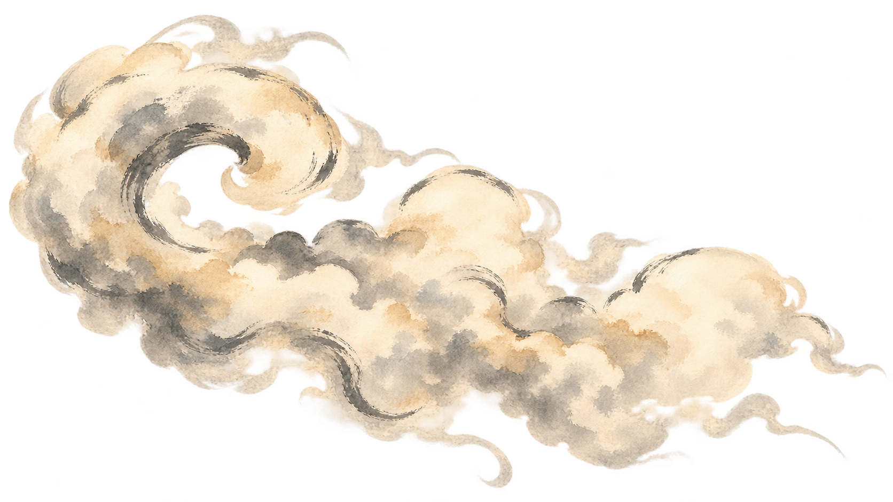
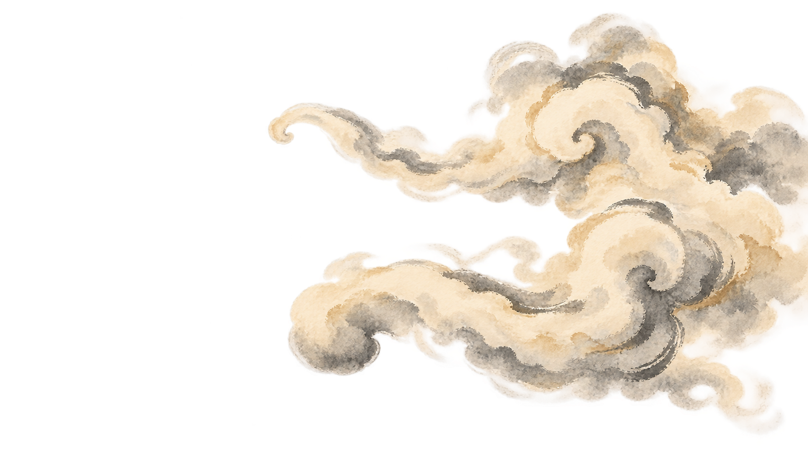
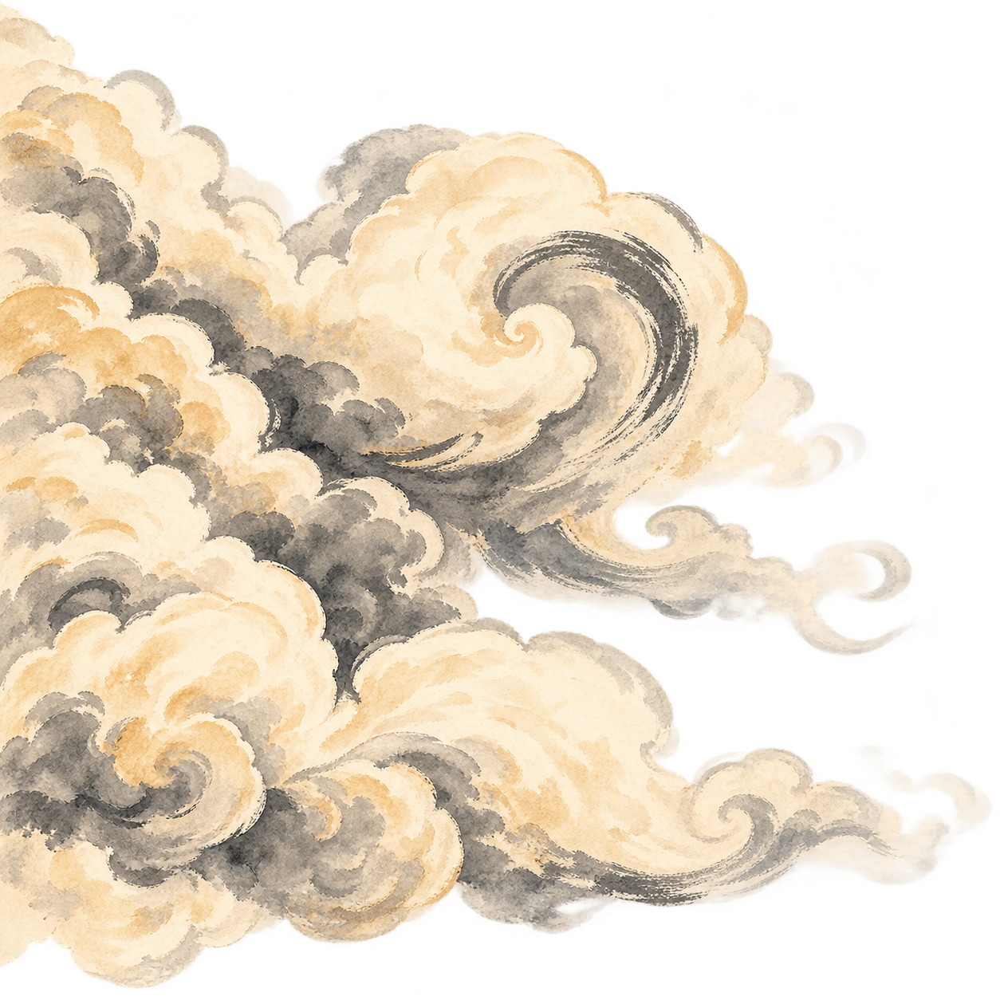
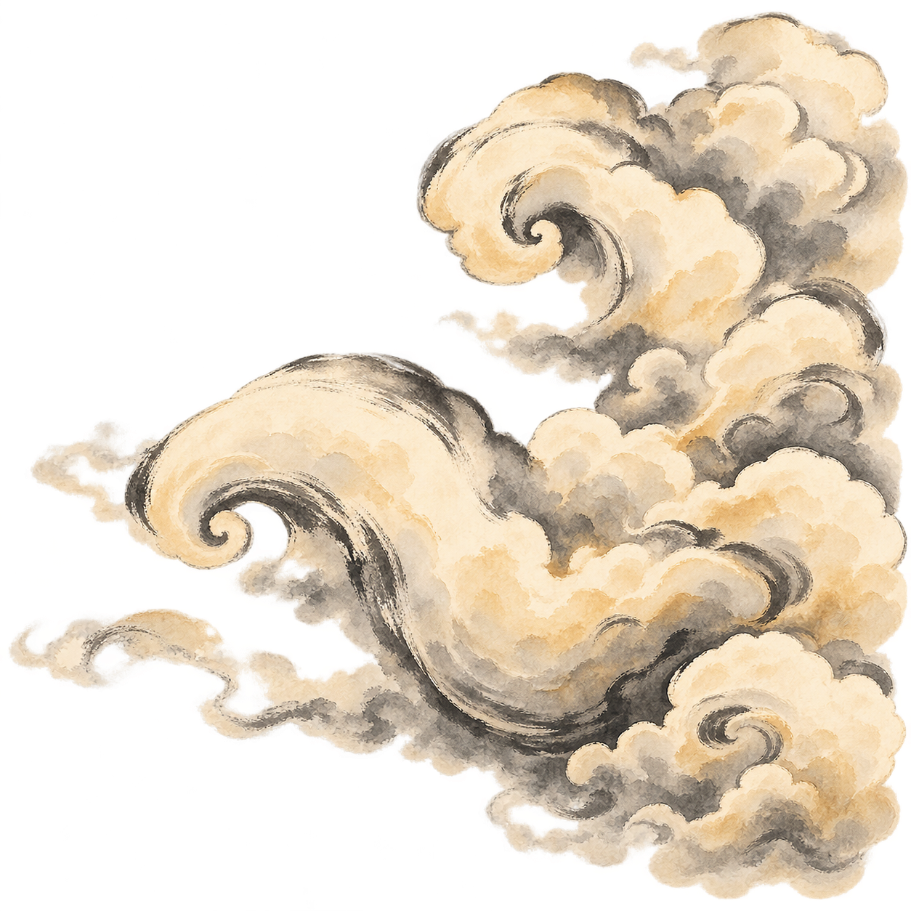
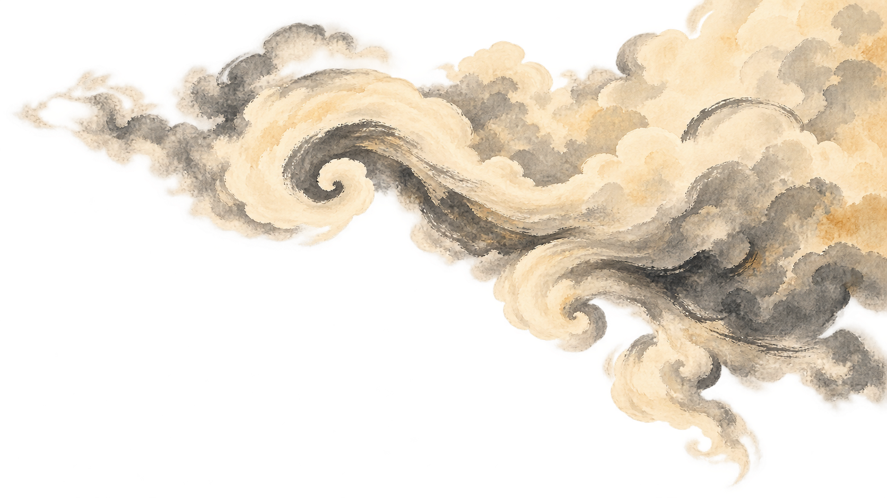

Village to autumn temples · Large open curls, rounded cloud fans and expressive warm-gray brush accents.





STATIC LAYERED STUDY · NEW PNG ARTWORK
Six independently generated transparent layers. The checkerboard below is only a viewing aid.
LEFT · REARAn open comma with a rounded trailing fanLEFT · MIDDLEOne grand upper volute over a low fanLEFT · FRONTA giant low petal-lobe with one curled crestRIGHT · REARA high double-hook cloud flourishRIGHT · MIDDLETwo staggered broad curls and a deep lower shoulderRIGHT · FRONTAn upper spiral canopy with a forked rounded tail
ARTWORK PREVIEW · AWAITING YOUR APPROVALOpening artwork and page animation unchanged.